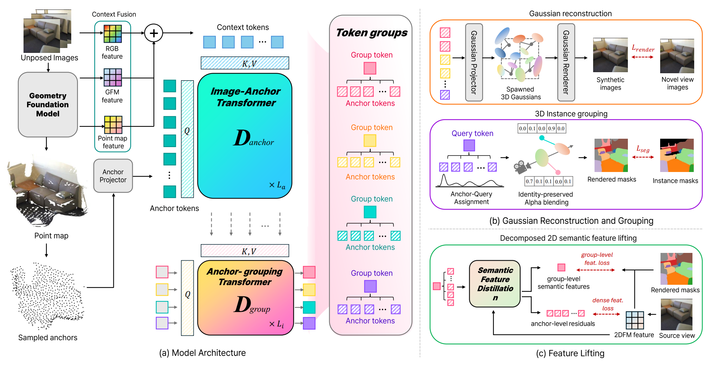
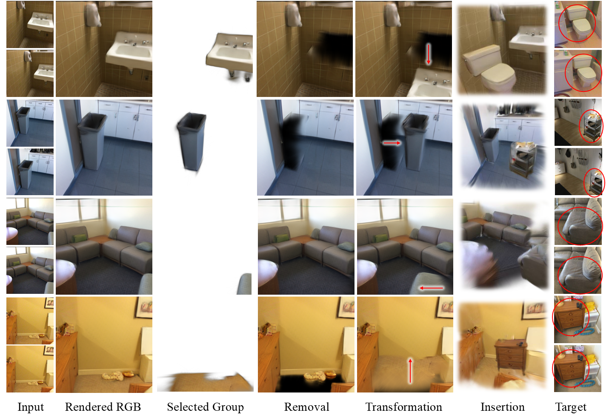
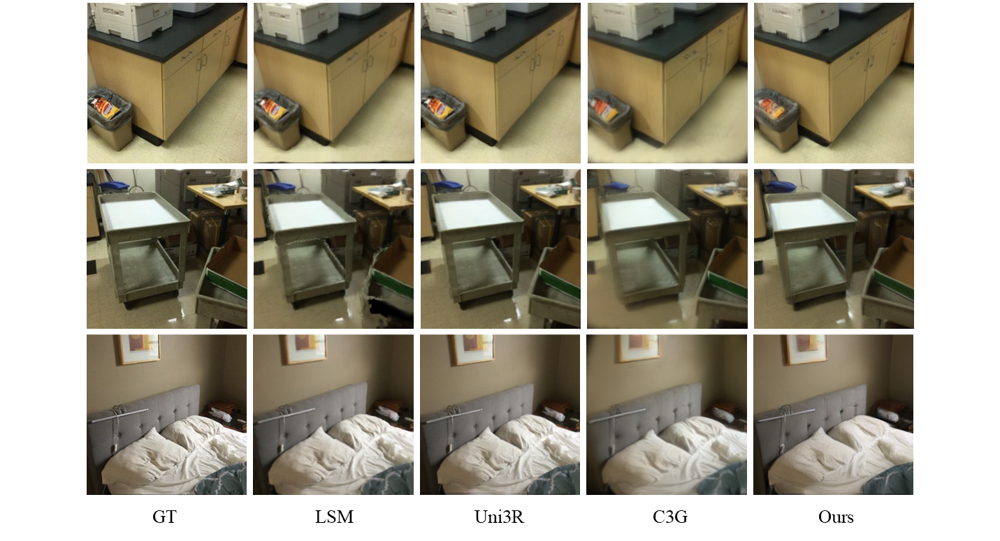
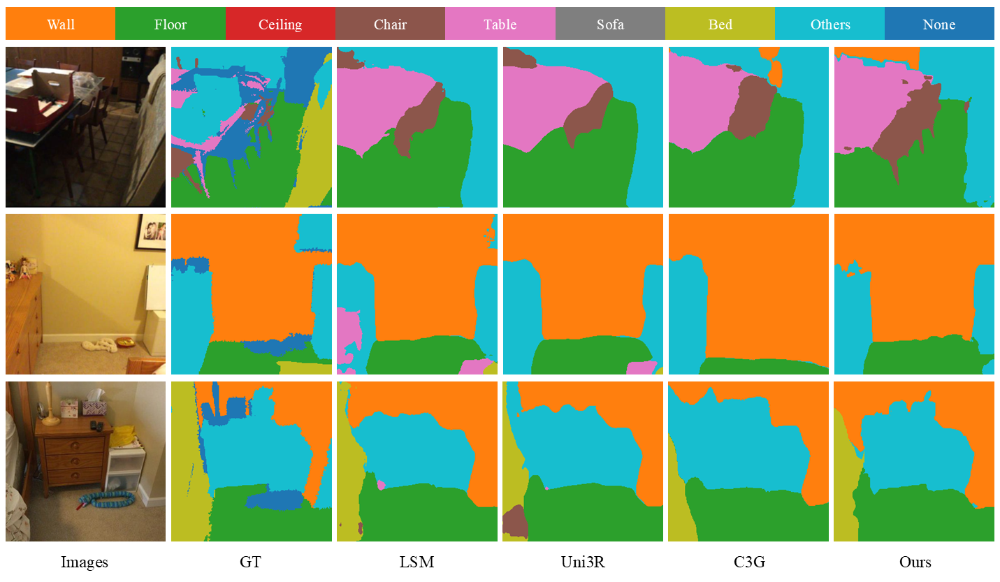
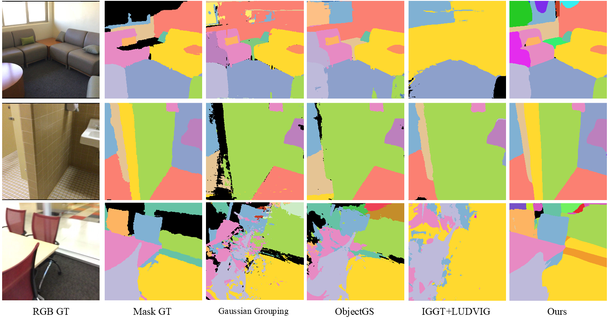

A feed-forward framework that decomposes a scene into compact, object-centric 3D token groups — making instances a native interface of the 3D representation.
A 3D scene is understood through its objects, not the primitives that compose them. Yet feed-forward reconstruction methods output dense, unstructured sets of points or Gaussians, leaving object-level structure to be recovered after the fact. We propose a feed-forward framework that decomposes a scene into instance-structured 3D token groups directly from unposed multi-view images — compact object-centric units from which reconstruction, segmentation, and manipulation all follow. Each token group pairs an instance token capturing entity-level identity with anchor tokens that encode local geometry and appearance, which are decoded into a set of 3D Gaussians. This two-level factorization decouples object identity from local appearance, making object instances a native interface of the representation rather than a derived product. The token groups are learned through differentiable rendering with joint reconstruction and segmentation supervision, requiring no 3D annotations. Our feed-forward model surpasses per-scene optimization baselines in class-agnostic instance segmentation while remaining competitive in novel view synthesis. Beyond these metrics, the same token groups directly unlock instance-level scene editing — removing, translating, or inserting objects by operating on their groups — as well as efficient open-vocabulary 3D instance retrieval, where retrieval complexity scales with the number of instances rather than primitives.
A frozen 3D foundation model extracts multi-view features and pointmaps; a token-group decoder produces anchor tokens for local detail and group tokens that bind anchors into object instances.

Figure 2. Overview of the 3D token-group framework: multi-view features and pointmaps are fused into context tokens, the image-anchor decoder decodes anchor tokens, and the anchor-grouping decoder produces group tokens that define instance-level assignments.
A frozen 3D foundation model (VGGT) extracts per-view features and pointmaps from unposed RGB images; patchified RGB and pointmap cues enrich the context tokens.
An image-anchor transformer grounds anchor tokens in the multi-view context, then an anchor-grouping transformer updates group tokens that compete for anchor ownership via a softmax assignment — analogous to slot competition.
Each anchor decodes into 3D Gaussians; each Gaussian inherits its parent's group assignment, yielding instance-level groups that can be independently rendered and manipulated.
Trained end-to-end with RGB rendering loss + 2D instance-mask grouping loss (Hungarian-matched BCE + Dice). No 3D annotations; instance structure emerges entirely from 2D supervision.
2D foundation features are lifted into a shared group-level embedding plus low-dimensional anchor-level residuals — compact semantics that support entity-level open-vocabulary retrieval.
Because instances are first-class units, downstream tasks reduce to operating on token groups — no post-hoc grouping or per-scene optimization.
Anchor tokens decode into 3D Gaussians, rendering high-quality novel views in a single forward pass.
Group tokens yield class-agnostic instance masks that surpass per-scene optimization baselines on AP.
Select a token group and apply an elementary op — render, remove, move, or insert an instance — with no masks or optimization.
Lifted group features let a text query select complete, coherent instances — not a scattered subset of primitives.

Figure 6. Instance-level token manipulation. Each token group represents a single instance, so edits — including object insertion — stay strictly localized to the targeted instance, leaving neighbors and background untouched.
The actual 3D Gaussians our feed-forward model predicts for a ScanNet test scene, rendered as real Gaussian splats. Drag to orbit, scroll to zoom — and switch a token off to make exactly that instance disappear.
11 token groups · drag the scene to rotate · click to toggle each instance
32k Gaussians from a single forward pass, grouped into instance token groups — the same interface used for removal, transformation, and insertion. (No WebGL? Falls back to a 2.5D parallax preview.)
Evaluated on ScanNet across reconstruction, feature lifting, and class-agnostic instance segmentation. Bold = best.
| Method | Src mIoU↑ | Tgt mIoU↑ | PSNR↑ | SSIM↑ | LPIPS↓ | #Sem. units↓ | Feat. size↓ |
|---|---|---|---|---|---|---|---|
| LSM | 0.527 | 0.512 | 24.24 | 0.821 | 0.222 | 131,072 | 67.1 M |
| Uni3R | 0.540 | 0.558 | 25.53 | 0.873 | 0.138 | 131,072 | 8.4 M |
| C3G | 0.542 | 0.513 | 23.89 | 0.770 | 0.285 | 2,048 | 1.0 M |
| Ours | 0.661 | 0.657 | 25.28 | 0.771 | 0.238 | <100 | 59.4 K |
Best feature-lifting mIoU on both source and target views, while storing semantics in <100 instance tokens instead of 131K per-pixel Gaussians — orders of magnitude more compact.

Figure 3. Qualitative reconstruction with 2 context views — our token groups recover geometry and appearance competitively with per-pixel Gaussian baselines.

Figure 4. Open-vocabulary novel-view segmentation with lifted LSeg features — entity-level token features yield clean, coherent semantic maps.
| Type | Method | AP↑ | AP₅₀↑ | AP₂₅↑ | PSNR↑ | SSIM↑ | LPIPS↓ |
|---|---|---|---|---|---|---|---|
| Per-scene opt. | Gaussian Grouping | 0.139 | 0.288 | 0.440 | 23.20 | 0.715 | 0.325 |
| Per-scene opt. | ObjectGS | 0.178 | 0.337 | 0.489 | 24.34 | 0.733 | 0.310 |
| FF + opt. | IGGT + LUDVIG | 0.122 | 0.265 | 0.442 | 22.75 | 0.712 | 0.323 |
| Feed-forward | Ours | 0.235 | 0.438 | 0.564 | 22.41 | 0.709 | 0.355 |
Best AP across all thresholds in a fully feed-forward manner, while competing per-scene methods require costly per-scene optimization.

Figure 5. Class-agnostic instance segmentation — group tokens partition the scene into coherent instances feed-forward, without per-scene optimization.
@misc{yoo2026instok3d,
title={Scenes as Objects, Not Primitives: Instance-Structured 3D Tokenization from Unposed Views},
author={Mijin Yoo and In Cho and Subin Jeon and Jiwoo Lee and Eunbyung Park and Seon Joo Kim},
year={2026},
eprint={2606.29513},
archivePrefix={arXiv},
primaryClass={cs.CV},
url={https://arxiv.org/abs/2606.29513},
}